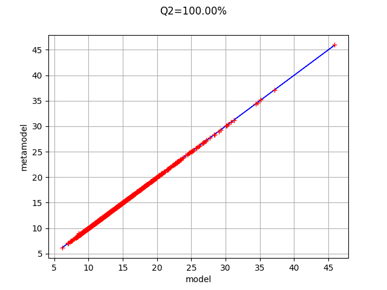
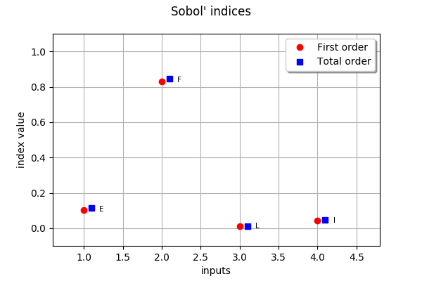

Create a polynomial chaos metamodel by integration on the cantilever beam¶
In this example, we create a polynomial chaos metamodel by integration on the cantilever beam example.
In order to do this, we use the GaussProductExperiment class.
[1]:
import openturns as ot
[2]:
dist_E = ot.Beta(0.9, 3.1, 2.8e7, 4.8e7)
dist_E.setDescription(["E"])
F_para = ot.LogNormalMuSigma(3.0e4, 9.0e3, 15.0e3) # in N
dist_F = ot.ParametrizedDistribution(F_para)
dist_F.setDescription(["F"])
dist_L = ot.Uniform(250., 260.) # in cm
dist_L.setDescription(["L"])
dist_I = ot.Beta(2.5, 4, 310., 450.) # in cm^4
dist_I.setDescription(["I"])
myDistribution = ot.ComposedDistribution([dist_E, dist_F, dist_L, dist_I])
[3]:
dim_input = 4 # dimension of the input
dim_output = 1 # dimension of the output
def function_beam(X):
E, F, L, I = X
Y = F* (L**3) / (3 * E * I)
return [Y]
g = ot.PythonFunction( dim_input, dim_output, function_beam)
g.setInputDescription(myDistribution.getDescription())
Create a polynomial chaos decomposition¶
We create the multivariate polynomial basis by tensorization of the univariate polynomials and the default linear enumerate rule.
[4]:
multivariateBasis = ot.OrthogonalProductPolynomialFactory([dist_E, dist_F, dist_L, dist_I])
Generate an training sample of size N with MC simulation.
[5]:
N = 50 # size of the experimental design
inputTrain = myDistribution.getSample(N)
outputTrain = g(inputTrain)
We select the FixedStrategy truncation rule, which corresponds to using the first P polynomials of the polynomial basis. In this case, we select P using the getStrataCumulatedCardinal method, so that all polynomials with total degree lower or equal to 5 are used.
[6]:
totalDegree = 5
enumfunc = multivariateBasis.getEnumerateFunction()
P = enumfunc.getStrataCumulatedCardinal(totalDegree)
adaptiveStrategy = ot.FixedStrategy(multivariateBasis, P)
adaptiveStrategy
[6]:
class=FixedStrategy derived from class=AdaptiveStrategyImplementation maximumDimension=126
We see that the number of polynomials is equal to 126. This will lead to the computation of 126 coefficients.
We now set the method used to compute the coefficients; we select the integration method.
We begin by getting the standard measure associated with the multivariate polynomial basis. We see that the range of the Beta distribution has been standardized into the [-1,1] interval. This is the same for the Uniform distribution and the second Beta distribution.
[7]:
distributionMu = multivariateBasis.getMeasure()
distributionMu
[7]:
ComposedDistribution(Beta(alpha = 0.9, beta = 3.1, a = -1, b = 1), LogNormal(muLog = 9.46206, sigmaLog = 0.554513, gamma = 0), Uniform(a = -1, b = 1), Beta(alpha = 2.5, beta = 4, a = -1, b = 1), IndependentCopula(dimension = 4))
[8]:
marginalDegrees = [4] * dim_input
experiment = ot.GaussProductExperiment(distributionMu, marginalDegrees)
We can see the size of the associated design of experiments.
[9]:
experiment.generate().getSize()
[9]:
256
The choice of the GaussProductExperiment rule leads to 256 evaluations of the model.
[10]:
projectionStrategy = ot.IntegrationStrategy(experiment)
We can now create the functional chaos.
[11]:
chaosalgo = ot.FunctionalChaosAlgorithm(g, myDistribution, adaptiveStrategy, projectionStrategy)
chaosalgo.run()
Get the result
[12]:
result = chaosalgo.getResult()
The getMetaModel method returns the metamodel function.
[13]:
metamodel = result.getMetaModel()
Validate the metamodel¶
Generate a validation sample (which is independent of the training sample).
[14]:
n_valid = 1000
inputTest = myDistribution.getSample(n_valid)
outputTest = g(inputTest)
The MetaModelValidation class validates the metamodel based on a validation sample.
[15]:
val = ot.MetaModelValidation(inputTest, outputTest, metamodel)
Compute the predictivity coefficient
[16]:
Q2 = val.computePredictivityFactor()
Q2
[16]:
0.999965622393609
Plot the observed versus the predicted outputs.
[17]:
graph = val.drawValidation()
graph.setTitle("Q2=%.2f%%" % (Q2*100))
graph.setLegends([""])
graph
[17]:

Sensitivity analysis¶
Retrieve Sobol’ sensitivity measures associated to the polynomial chaos decomposition of the model.
[18]:
chaosSI = ot.FunctionalChaosSobolIndices(result)
print( chaosSI.summary() )
input dimension: 4
output dimension: 1
basis size: 126
mean: [14.2645]
std-dev: [4.6981]
------------------------------------------------------------
Index | Multi-indice | Part of variance
------------------------------------------------------------
2 | [0,1,0,0] | 0.829676
1 | [1,0,0,0] | 0.101331
4 | [0,0,0,1] | 0.0418503
3 | [0,0,1,0] | 0.0106262
------------------------------------------------------------
------------------------------------------------------------
Component | Sobol index | Sobol total index
------------------------------------------------------------
0 | 0.102882 | 0.112782
1 | 0.829676 | 0.843737
2 | 0.0106273 | 0.0117665
3 | 0.0421157 | 0.0464717
------------------------------------------------------------
[19]:
first_order = [chaosSI.getSobolIndex(i) for i in range(dim_input)]
total_order = [chaosSI.getSobolTotalIndex(i) for i in range(dim_input)]
input_names = g.getInputDescription()
ot.SobolIndicesAlgorithm.DrawSobolIndices(input_names, first_order, total_order)
[19]:

Conclusion¶
We see that the coefficients are particularily well computed since the Q2 coefficient is excellent (perfect ?), even with a relatively limited amount of simulation (256 points).